<<2014年5月 | トップページ | 2014年7月>>
2014年6月
雨の日には、Let's○○！［原田明莉］
★Hello★
原田明莉でーーーす♪
もー梅雨ですね(･･;)
雨で友達とも遊べないし、みなさんもつまらなくないですかー？
そこで・・・
今回のお題は、
★雨のときでも楽しくできる遊び★
なんです！
ということで、部屋の中でHAPPYに楽しくできる遊びを、考えてみましたー！
じゃあ、まずは、グループでの遊びを考えたよー^o^
あかりもやってるよッ
★宝探し★
こんな遊びだよ♪
ルールを教えるねー！
何か、小物を家のどこかにかくすの♪
簡単バージョンでやりたいときは、大きなものをかくしてね。
難しいバージョンでやりたいときは、小さなものをかくすとイイよ♪
それで、隠した人は、見つけようとしてる人が、隠した宝の近くに近づいたら
『近い！近い！』とか、
言うと、見つけようとしてる人も探しやすいし、ちょっとテンションUP！
すごい楽しいよ！
ぜひ、やってみてね！
次は、1人でいるときの遊び
★お菓子作り★
だよ！
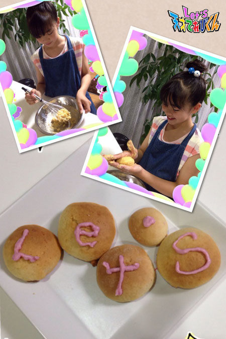
あかりは、イチゴ大福とか、クッキーとか、マフィン・チョコとか、
いろいろ作ってるんだ（≧∇≦）
特にクッキーは簡単だから、作ることが多いよ♪
材料とかは、インターネットとかで調べるとイイよ♪
それで、作りおわったら、友達に分けてあげるのもいいよねー(*^^*)
自分が作ったやつだから、美味しく感じられる！！！
最高だよ～～～（≧∇≦）
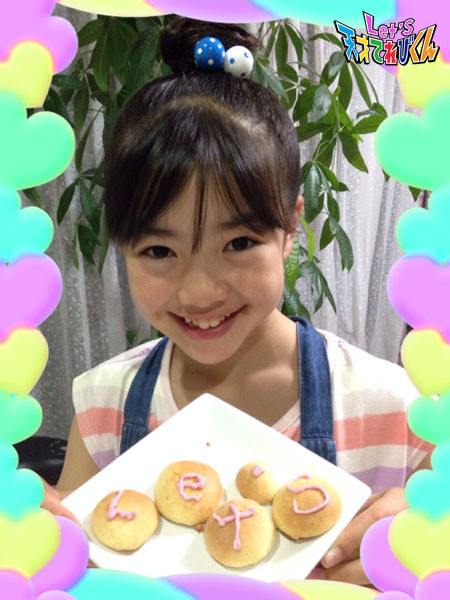
みんなも、ぜひぜひ、やってみてね！
★Let's play★
投稿者:原田明莉 | 投稿時間:18時45分 | カテゴリ：てれび戦士 | 固定リンク
雨の日には、Let's○○！［辻村晃佑］
今回のテーマ「雨の日はLet's○○！」か～
梅雨だと雨がたくさん降りますからね。
中学生になって勉強する教科が増えたので、復習をしないとテストがやばいです＼(^o^)／
もうすぐ期末テストなので、今は雨の日でも晴れの日でも
家では問答無用でテストのための勉強です｡ﾟ(ﾟ´Д｀ﾟ)ﾟ｡
なので、ぼくは「雨の日はLet's 勉強！」です！
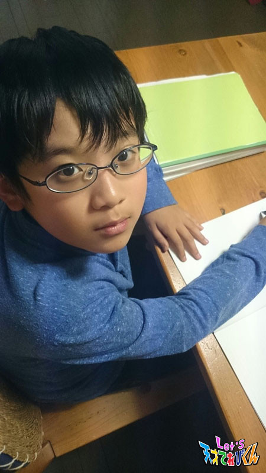
投稿者:辻村晃佑 | 投稿時間:18時45分 | カテゴリ：てれび戦士 | 固定リンク
雨の日には、Let's○○！［飯島緋梨］
雨の日にはLet's クッキング！
今日も雨！
外に遊びに行けないので
家でおやつを作ることにしました。
この前、番組で食べた
広島のお好み焼きがすごく美味しくて
家族にも食べさせてあげたくなりました(^_^)
大阪のお好み焼きは作ったことがあったけど、広島のお好み焼きは初めて作りました。
まず、最初にクレープを作り
キャベツ・かつお節・天かす・イカ天・青ネギ・もやし・豚肉を
山盛りのせて生地をかけてから
思い切って『いっせいのせっ！』
でひっくり返します。
なんと大成功！
上手にできました*\(^o^)/*
そして、焼きそばと卵を広げ
山盛りの具と合体させて
もう一度ひっくり返します。
仕上げにソースと青のりとマヨネーズをかけて完成です。
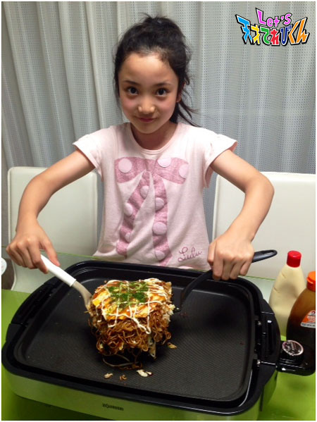いとこも呼んでお好み焼きパーティーをしました。
みんなが美味しいと喜んでくれたので
すごく嬉しかったです。
緋梨でもかんたんにできました*\(^o^)/*
わたあめも作ったよ(^_^)
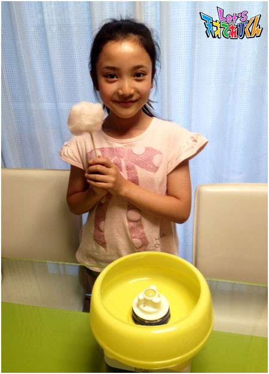
投稿者:飯島緋梨 | 投稿時間:18時54分 | カテゴリ：てれび戦士 | 固定リンク
雨の日には、Let's○○！［小西憧弥］
こんにちはー！11歳になった憧弥です！
翼くんと同い年だって～(°_°)
信じられな～い（笑）
誕生日の夜ご飯は、家族でしゃぶしゃぶ食べ放題に行きました。
めっちゃくちゃおいしくて、お腹いっぱい食べました。
今回は「雨の日にはLet's○○！」
平日の雨の日は、学校が終わったら、約束してる友達が遊びに来てくれて、
ゲームで盛り上がります(^o^)/
友達と約束しなかった日は、工作するのが大好きだから、
家にあるものでいろんな物を作って、それで遊んでます。
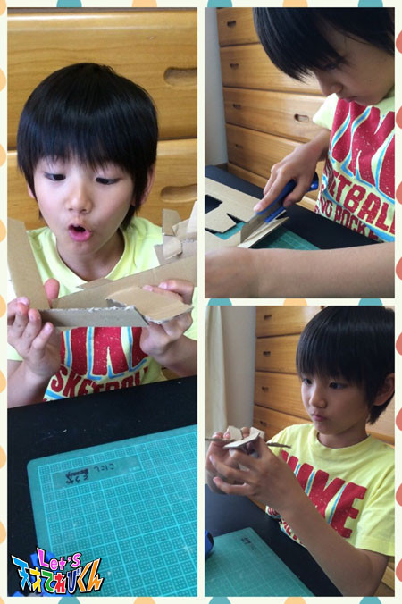
大きい段ボールがあると、お家を作ります。
窓やドアも作って、中にライトを持って入って、マンガを読んだりおやつを食べたりします。
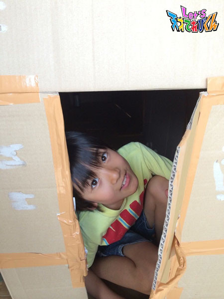
これが楽しいんだな～（≧∇≦）
土曜日は、お父さんと部屋の中にテントをはって、中でねたりします！
テントの日の夜ご飯は、キャンプ用のガスコンロでハンゴウを使って炊きます！
もっちもちにできあがるから、おいしい！
お父さん、上手なの(^_^)v
雨の日は外で遊べないけど、家の中でも、楽しいこといっぱいあるよ～！
投稿者:小西憧弥 | 投稿時間:18時45分 | カテゴリ：てれび戦士 | 固定リンク
雨の日には、Let's○○！［杉本瑛］
雨の日…「大好きなローラーシューズができない日」かな？
そんな雨の日にしていることは…
「読書」
スリリングな冒険のお話やコメディータッチの推理小説が好きです 。
私は自分のお部屋のロフトを図書館にしています。
そこで一人で好きな本を読んで推理したり、
もし自分が主人公だったらこうするなぁと考えたりします。
ちなみに赤ちゃん絵本も大事にとっています。
いくつになっても好きなものは変わらないですね。
やっぱり本は、いいなぁ(*^_^*)
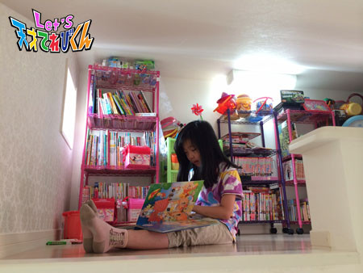
あと録画している音楽番組をみて、まひるちゃんや翼くんがしているような
かっこいいダンスではなくて、瑛オリジナルのてきとうダンスで踊り狂ったりもします(^ ^)
そうして、アゲアゲ気分になって楽しんでいます。
イェーイ^_^
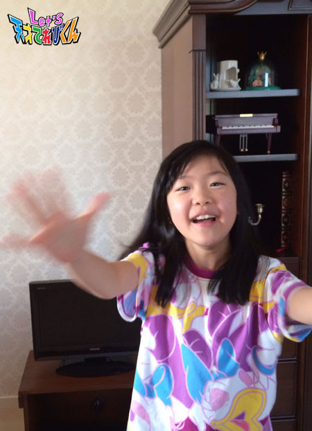
雨の日でも甘いスイーツはやめられないので、カロリー消費のためにフラフープをします。
BGMはお馴染みのあの曲です^ ^
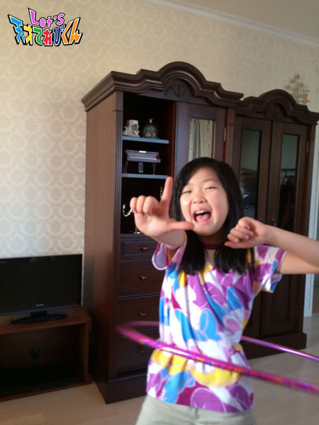
Ｌet's！！！
こんなかんじで雨の日も楽しく遊んでいます。
投稿者:杉本瑛 | 投稿時間:18時45分 | カテゴリ：てれび戦士 | 固定リンク
雨の日には、Let's○○！［笹原尚季］
こんにちは尚季です。
今回は、雨の日の過ごし方です♪
晴れた日は、いつもバスケをしたり、放課後には野球をしたりしますが、
雨の日は、お家でゆっくりすごします。
録画したドラマをみたり(^^)
やっぱり、お母さんとおやつやごはんをホットプレートで作ったり、
図書館で借りてきた本を読んだりすることがいちばん楽しいです☆
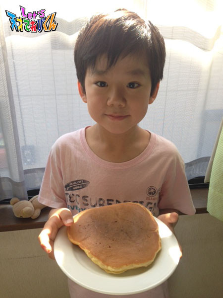 読書は大好きで、学校の先月の読書貯金では、10996ページ読みました。
来月は頑張ってもっと読みたいな。
でも読書を始めると時間を忘れちゃって、よくお母さんに注意されます。
でも楽しいです♪
みんな、雨の日は何をして過ごしますか？
今度教えてねー♪♪
投稿者:笹原尚季 | 投稿時間:18時45分 | カテゴリ：てれび戦士 | 固定リンク
小さな幸せ！［赤崎月香］
こんにちはヽ(^▽^@)ノ
赤崎月香（あかさき つきか）です。
ときどき 「 あかつき さん！」 と、呼ばれることがあります。
おしいっ！ちょっと違うよ…((o(-゛-;)
と、思いつつ
「はいっ！！」
返事をします♪
ニヤニヤします⊂((〃￣ー￣〃))⊃ ふふふ
☆。・:*:・°★,。・:*:・°☆
中間テストがありました。
英語のテストは、100点でした♪
勉強！勉強！って、
中学生って大変なんですね・・・((+_+))
そして、またすぐに期末テストがあります。
もうイヤだ(((((((((((((ーー;)
こんなときは、「小さな幸せ！」に逃げるしかない！
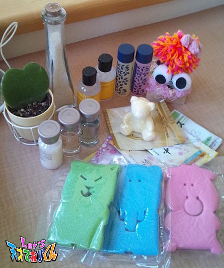わたしの「小さな幸せ！」は、
良い香りのバスグッズで、お風呂＆飛行機の空想♪
温泉の素を入れたり、
ブクブク泡お風呂にしてみたり、
大好きな飛行機の本を持ち込んだり、
あ～ ・:*:・(￣∀￣ )。・:*:・ しあわせ～
もう頭の中は、飛行機で大空を飛んでいます♪
お風呂の湯気で、飛行機の本がフニャフニャになったので、
同じ本を買い直したことがあるんですよ。
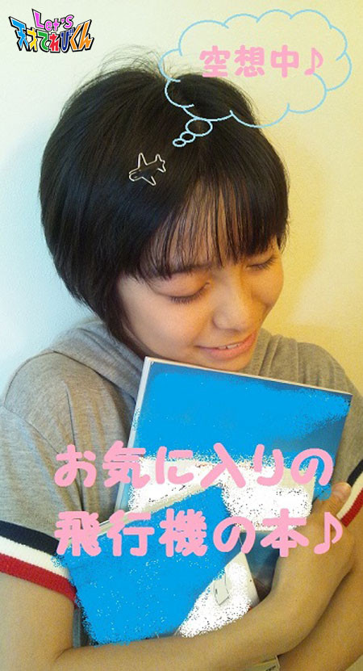飛行機の空想中は、だれもじゃましないでね～
☆。・:*:・°★,。・:*:・°☆
小さな幸せを感じたら、やさしい気持ちになります。
またね～ヾ(*'-'*)
投稿者:赤崎月香 | 投稿時間:18時45分 | カテゴリ：てれび戦士 | 固定リンク
小さな幸せ！［辻村晃佑］
今回は、小さな幸せかー
ぼくの小さな幸せはやっぱりウーロン茶かな～
ウーロン茶は飲むと心がおち着いてほっこりするので、飲むたびに幸せだな～と感じます。
今の自分のマイブームです。
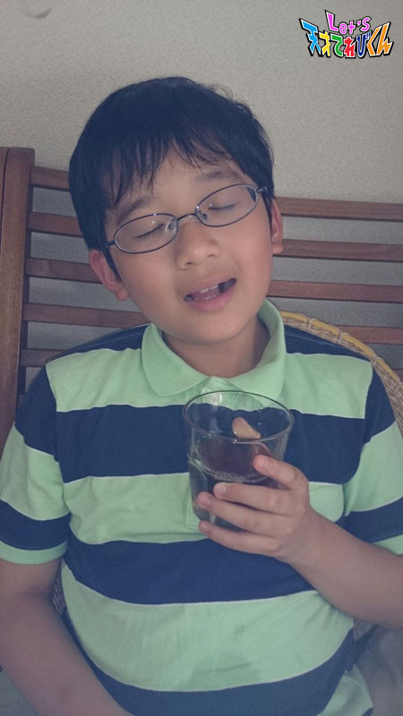
ですが、ある出来事がありました。
【夜】
おやすみー(´-ω-`)
・・・・・・・・・・
ふぅー( ´_ゝ`)
寝れない・・・( ;∀;)
寝る前にカフェインの入った物を飲んだらこうなります(+_+)
こんなことにならないように飲む時間を気をつけたいと思います。
投稿者:辻村晃佑 | 投稿時間:18時54分 | カテゴリ：てれび戦士 | 固定リンク
小さな幸せ！［桐畑カレン］
こんにちは。
この前とってもおいしい生たまごに出会ったカレンです。
ケールというお野菜のジュースを飲んで育った、
宮崎県のにわとりさんが産んだたまごです。
たまごが苦手な私だけど、お肉やお野菜につけて、ペロリと食べれました(*^^*)
やったあ！！
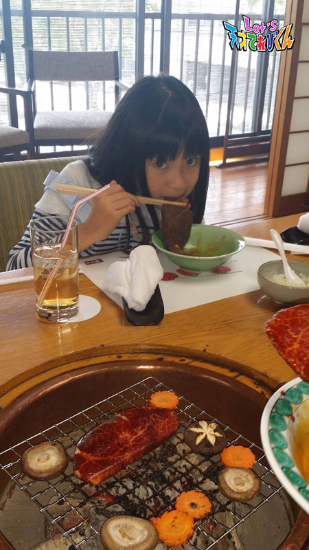
私の小さな幸せ(*^^*)
たくさんあります!
お友達とおしゃべりしたり、遊んでるとき。
先生が宿題を出すのをわすれちゃったとき。
かわいいものを見つけたとき。
夜、お気に入りのまくらで寝るときなどです。
でもでも、なんと言っても私が一番の幸せなときは、
！！！ずばり！！！
「おやつを食べているとき」です(*^^*)
学校やおけいこから帰ってきて、食べるおやつは最高です。
おやつは、あまくておいしくて、まるで幸せの世界にいるような気分になります。
たまに、「おやつ禁止！」と言われると、私はなみだがポロポロでます。
「私の幸せをうばわないで～～～」と、なきさけんだ事もあります。
それくらい、おやつは私にとって大切で幸せなものなんですp(^-^)q
今日のおやつは、ハチミツがたっぷり入ったおまんじゅう。
いただきま～す(^O^)
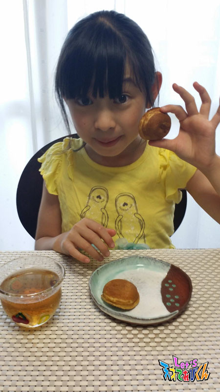
投稿者:桐畑カレン | 投稿時間:18時45分 | カテゴリ：てれび戦士 | 固定リンク
小さな幸せ！［林武尊］
先日、運動会がありました。
騎馬戦や組体操、マーチングもあって楽しかった！
でも暑くて大変でした。
ちなみに、ぼくは白組でした。
さて、赤と白のどっちが勝ったでしょう？？
一の位は・・・どっちも0
百の位は・・・どっちも2
十の位は・・・（どきどき）・・・（どきどき）・・・
なんとどっちも6で、白組も赤組も優勝しちゃいました*\(^o^)/*
運動会の話でもりあがっちゃった*\(^o^)/*
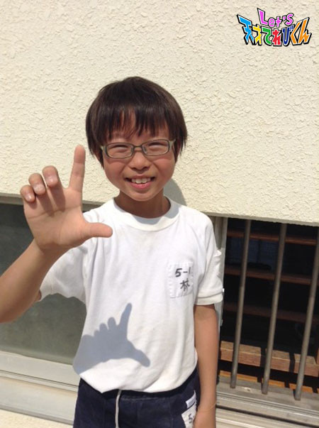
本題に入ります(￣^￣)ゞ
ぼくの小さな幸せは、映画を見ることです。
映画館でもおうちでも、たくさん映画を見ます。
この前も、アナと雪の女王を見に行きました。
ぼくが映画館で見た映画の中で、特に印象に残っているのは、
ローワン アトキンソンさんが主演をしている
『ジョニーイングリッシュ 気休めの報酬』です。
理由は、ローワンアトキンソンさんがとってもおもしろいからです。
でも、最近あんまり映画が出ないからつまんない…
もっともっと映画を出してほしい！
投稿者:林武尊 | 投稿時間:18時45分 | カテゴリ：てれび戦士 | 固定リンク
小さな幸せ！［飯島緋梨］
私の小さな幸せは学校の出来事！
学校で運動会がありました。
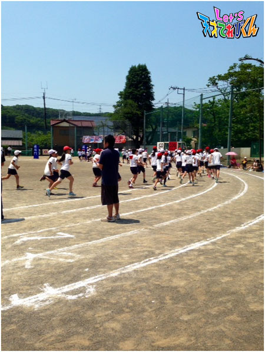
5年生になると6年生と一緒に組体操をします。
組体操では、ピラミッドをクラスで作ります。
練習のときは、いっしょうけんめい頑張ったのに、一度も成功しなくて不安でした。
なのに本番では大成功したのです！
とても嬉しかったです(^_^)
お母さんとお父さんとおばあちゃんも「感動したよ！」と言ってくれました。
緋梨の白組は負けちゃったけど、騎馬戦をしたり、リレーをしたり、
皆でいっしょうけんめい力を合わせて頑張ったので楽しかったです。
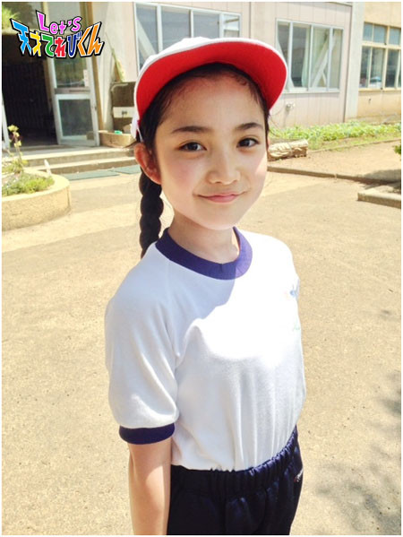
あと私の小さな幸せは、なんと言ってもやっぱり
うちのネコのにゃうは、緋梨の事が一番大好き！という事です。
朝起きるとすぐに近寄って来て
スリスリゴロゴロ。
帰って来ると靴下をクンクン。
学校に行くときも帰って来たときも
いつも玄関まで送りむかえしてくれます。
でもでも、ご飯をあげると、甘えてきてくれたのがウソのように知らん顔になります。
やっぱりご飯が欲しかっただけ？
ガーン(￣▽￣)
それでもにゃうが大好き！
にゃうが甘えてきてくれる事が小さな幸せです。
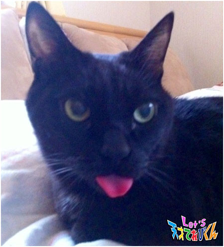
投稿者:飯島緋梨 | 投稿時間:18時45分 | カテゴリ：てれび戦士 | 固定リンク
小さな幸せ！［瀧澤翼］
最近、陸上大会で高跳び120㎝を飛びました瀧澤翼です。
順位はご想像にお任せします(^^;)
ぼくの家族はお父さん・お母さん・お姉ちゃん（中3）・ぼくと愛犬ポッキーの
4人と1匹の家族です。
でも、お姉ちゃんが夢をかなえるために中学生になって
東京のおじいちゃんの家で暮らすことになり、その日から3人と1匹で暮らしています。
年末年始、お姉ちゃんが帰って来たので、今年のお正月は前に家族で行ったことがある
千葉県富津市の東京湾観音へ行きました。
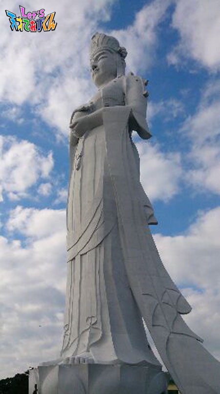この観音様は東京湾に向いて高台に建てられていて観音様の中を
階段で上がるのですが、途中にいろいろな神様がいてお参りしながら登ります。
「絶対てれび戦士になるぞ！！」ってお願いしたら、
な・な・なんと夢がかなっちゃったんです！！
めちゃめちゃうれしかったです☆o(≧▽≦)o☆
家族4人そろってお参りに行けたからだな～って思いました。
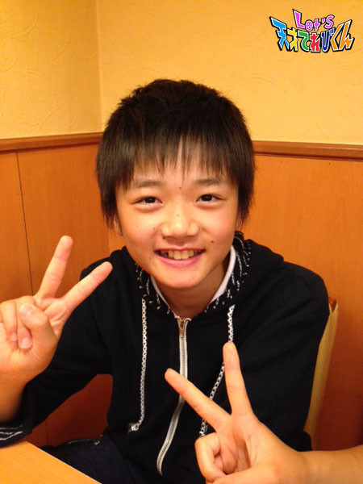
ぼく1人では何もできないけど、家族みんなが
いつもぼくの応援をしてくれるのでがんばれますp(^_^)q
あっ、ポッキーもね‥(^^;)
「小さな幸せ」って言えるかわからないけれど、
家族がいっしょにいれるって幸せだなぁって思ってます。
みなさんの小さな幸せってなんですか？
投稿者:瀧澤翼 | 投稿時間:18時45分 | カテゴリ：てれび戦士 | 固定リンク
小さな幸せ！［原田明莉］
★Hello★
原田明莉でーーーす！
よし！
じゃあ、さっそく今回の本題にいきまーす^ ^
今回のテーマはー
★小さな幸せ★
です！
『幸せ』って思うことっていっぱいあるけど、小さな幸せって
こんな感じかなー
↓↓↓↓↓↓↓↓
★★たまたま見つけた好きな食べ物の賞味期限がギリギリ！
★★家族が周りにいること！
★★転んだ所に四つ葉のクローバー
↑
これはないか(･･;)
当たり前に思ってることも
よく考えてみると、小さな幸せだったりするよね！
以外と、幸せって自分の周りにたくさんあるんだよね^_^
それで、あかりは、
もう1つ小さな幸せ見つけたよー^o^
多分ね、みんなも、きっと
感じたことあると思うヨー！
☆☆干した後の、お布団に飛び乗って
お日様の匂いを『クンクン』かいだ瞬間♪
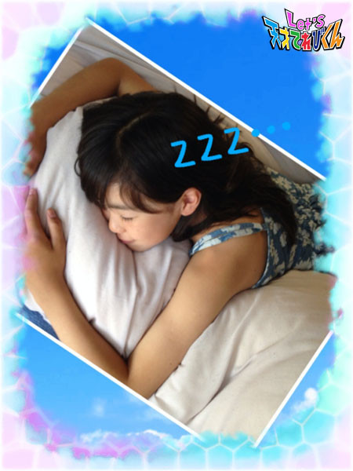
幸せ♪（≧∇≦）
たまらない（≧∇≦）
気持ち良すぎーーー（≧∇≦）
↑↑↑
これがあかりの、小さな幸せでーーーす！
これからも、幸せいっぱい感じていきたーい！
みなさんも、小さな幸せをたくさん
見つけてみてくださいねー！
★Let's enjoy★
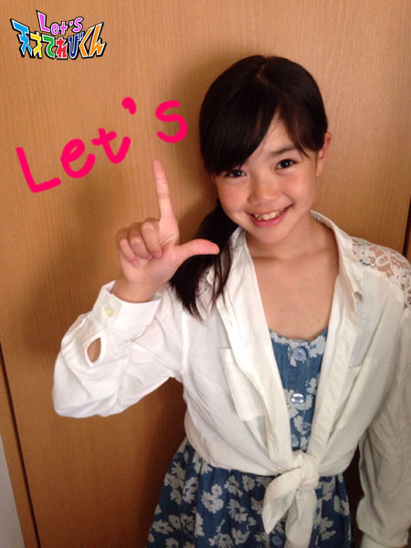
投稿者:原田明莉 | 投稿時間:18時54分 | カテゴリ：てれび戦士 | 固定リンク
小さな幸せ！［小澤竜心］
こんにちは！
竜心です。
今日は、ぼくの小さな幸せを聞いてください。
☆まず１つ目は、木に登ったときです。
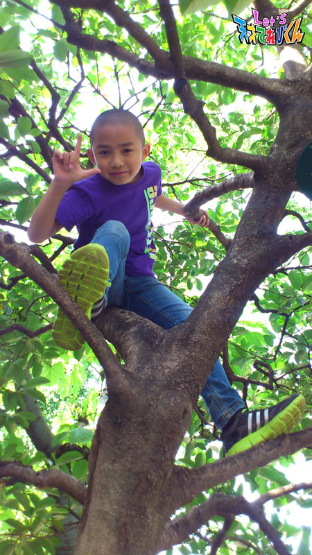
木の上にいると、やわらかい風がふいて、ストレスやなやみごとが、
風といっしょにふき飛ばされて、心がすっきりします。
☆２つ目は、銭湯に入ったときです。
大きいお風呂は、温かくて、気持ちがいいし、体が軽くなるからです。
☆３つ目は、家族みんなでごはんを食べるときです。
楽しいお話をしながら食べると、いつもより、おいしくなるからです。
まだまだたくさんあるんだけど、このくらいにしておきます。
幸せだなって感じた後には、かならず、元気になります！
小さなことでも、幸せだなって感じることって、とても大切だと思います。
では、またぁ～(^o^)
投稿者:小澤竜心 | 投稿時間:18時54分 | カテゴリ：てれび戦士 | 固定リンク
小さな幸せ！［杉本瑛］
杉本瑛です。
私の小さな幸せは、自分のお気に入りのスイーツを食べることです。
1つ目は蜜芋。
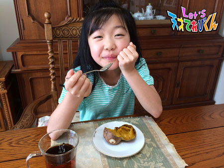憧弥君が好きなホクホクの焼き芋ではなくて、ねっとりしてるお芋です。
北京では蜜芋が普通でした。
お母さんがお買い物しているとき、家政婦の李さんと前にある焼き芋屋さんに
買いに行くのが楽しみでした。
だから今も食べると、それを思い出してほっこり気分になります。
2つ目はメロン。
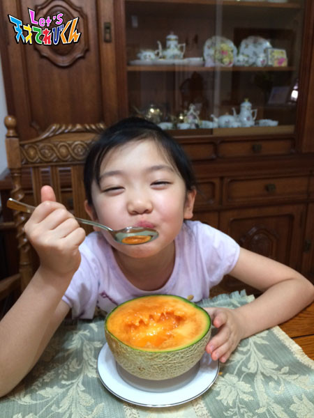特に赤肉のメロンが好きです。
最後までルンルン気分で食べられます。
3つ目はマンゴープリン。
マンゴーの甘さとプルルンとした食感がとっても美味しくてウキウキ気分になります。
4つ目はチョコレート。
ミルクチョコレートの濃厚な甘さでニッコリ気分になります。
5つ目はアイスクリーム。
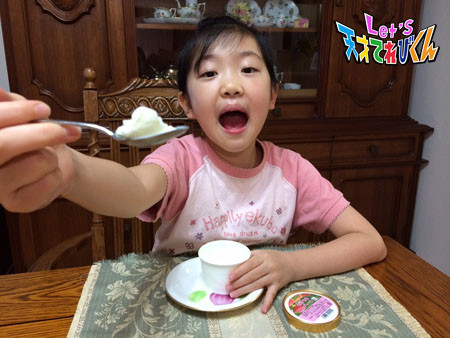
ほとんど毎日学校から帰ってきたら、すぐ食べています。
暑いときに食べるとスッキリ気分になります。
同じ日に北京の病院の隣のベッドで生まれた、親友のアシュリーちゃん。
二人でアイスクリームやフルーツなどの大好物で
チョコレートフォンデュをしたときの気分は、まさに最高でした。
♪───Ｏ（≧∇≦）Ｏ────♪
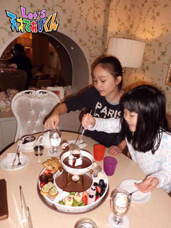
投稿者:杉本瑛 | 投稿時間:18時45分 | カテゴリ：てれび戦士 | 固定リンク
小さな幸せ！［笹原尚季］
こんにちは！
笹原尚季です！！
もうすぐ運動会があるので頑張って練習しています。
晴れだといいな～♪
今回は、ぼくの小さな幸せを教えたいと思います。
ぼくは、くまのぬいぐるみも好きだけど、一年前に飼い始めた、かめさんも好きなんです。
ぼく は、かめさんにごはんをあげてパクってする時とか、
日光浴してリラックスしているのをながめている時とか、
かめさんを洗ってあげる時とかが（ぼくが洗っあげる時はすごく落ち着いています）
幸せです☆
かめさんは、すごくちっちゃい時から育てて、
どんどん大きくなっていくのが嬉しいです （≧∇≦）
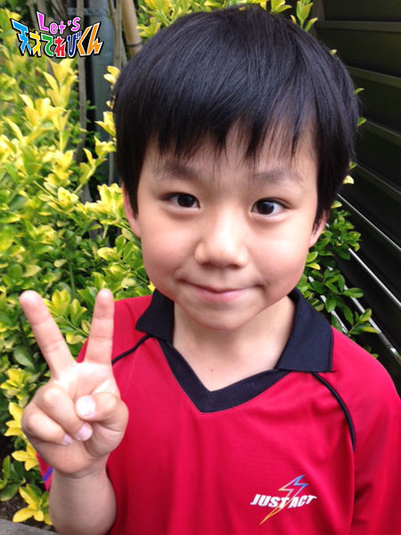
投稿者:笹原尚季 | 投稿時間:18時45分 | カテゴリ：てれび戦士 | 固定リンク
小さな幸せ！［齋藤茉日］
「いやーー疲れたなー」
なんていうとき、ありますよね！
私はこの間、テストがありました(._.)
たくさん勉強しました^ ^
結果は皆さんのご想像におまかせでw
で、、、テストが終わった後とか、たくさん体力使ったり。
そんなときって皆さん！何したくなりますか？
私は、一番、、、！
「寝たーーい！！！」
今回のテーマは『私の小さな幸せ』
そうなんです！
私の小さな幸せは「寝ること」なんです！！！
私の特技はダンスもあるんですが。。。
「どこでも寝られる」っていうことも一つの特技(^-^)/
友達の車の中でも？
電車のつり革につかまりながらでも？
ひまわりの上でも？？
ぐーすかぐーすか赤ちゃんみたいにw
睡眠は大切です^ ^
夜更かしNon！Non！
でわ、おやすみなさい☆
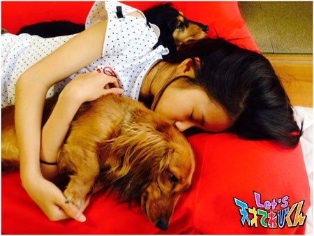
投稿者:齋藤茉日 | 投稿時間:18時45分 | カテゴリ：てれび戦士 | 固定リンク
小さな幸せ！［小西憧弥］
こんにちは！憧弥です(^o^)
この前、学校で調理実習がありました。
玉子をゆでて、いろんなかたさのゆで玉子を作って食べました。
お父さんは玉子が大好きなので、家に帰ってさっそく、作ってあげました！
『おいしい！』って言って食べてくれました。
また作ってあげようと思います。
今度のお題は『小さな幸せ！』
幸せって考えたら、いっぱいありました。
学校から帰ったときのおやつ。
宿題が終わった後のゲーム。
好きなテレビを見てるとき。
スイートポテトや焼き芋を食べてるとき。
釣りに行く前に釣りざおにリールやルアーをセットしてるとき。
ラーメンを食べてるとき。
…いっぱいあるけど、ダントツで1番は、夜寝る時、布団に入ったしゅん間です。
大好きな肌布団があって、そのふわふわの布団にくるまったしゅん間が
1番幸せです！！！
みんなの小さな幸せも聞きたいなーo(^_^)o
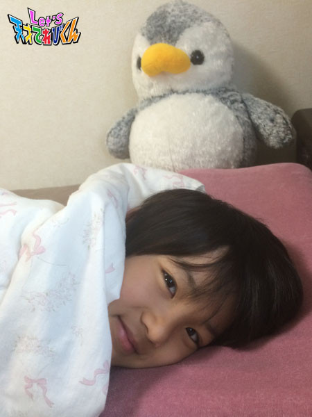
投稿者:小西憧弥 | 投稿時間:19時20分 | カテゴリ：てれび戦士 | 固定リンク
未来の自分！［桐畑カレン］
こんにちは。カレンです(^∇^)
この前、私の大好きな場所に行ってきました。
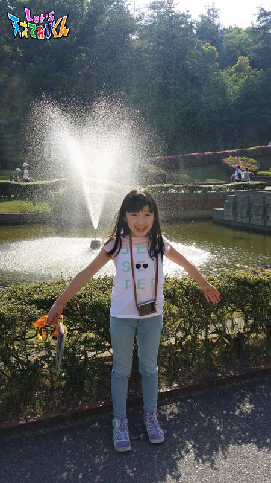レトロな建物がたくさん建っている、とってもすてきな場所なんです(*^^*)
未来の私は「レポーター」になって、いろんな場所を旅しています。
今でも行ける所や、今は行けないような所です。
宇宙だったり、すごい昔だったり、未来だったりです。
だから、宇宙語もしゃべれるし、きょうりゅう語もしゃべれます。
人間の住む世界中の言葉は全部しゃべれます。
その場所の面白い事やこまっている事や、
ふしぎな事やお祭りなんかの大ニュースをレポートします。
あちこち旅する私のパスポートはレインボーカラーです!
こうなってたら、うれしいな～(*^^*)
という手紙を、私の大好きな場所にある郵便局から出してきました。
この郵便局は10年後に配達してくれるんです！
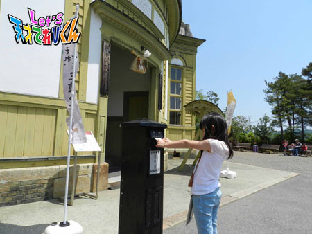
投稿者:桐畑カレン | 投稿時間:18時45分 | カテゴリ：てれび戦士 | 固定リンク
未来の自分！［飯島緋梨］
30年後の未来。
私は40才になっていて、
なりたかった獣医さんになれました。
未来の獣医さんは
動物と話しができて
動物は、痛いところを獣医さんに伝えられます。
そして現代では治せないどんな病気も、
魔法の薬で治せるようになっていて
長生きできるようになりました*\(^o^)/*
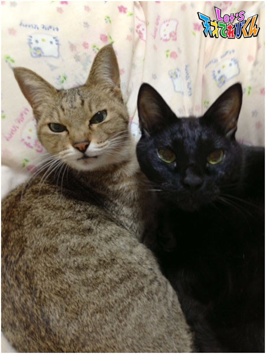
猫は人間の4倍の速さで年をとるので
私が獣医さんになったら
若返りの薬を開発して
家のにゃうも元気でいつまでも
一緒に居られるようにしたいです。
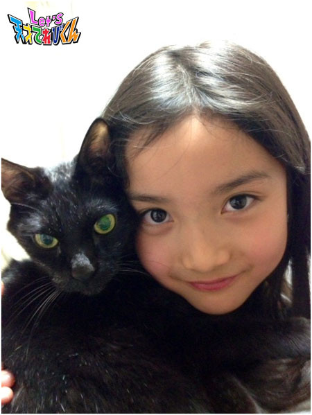みいちゃんは
病院に行っていた時、
いつも世界の終わりぐらい
ないて暴れていたので
未来の病院は温泉もついていて
旅行気分で治療ができるようになっているといいなと思います。
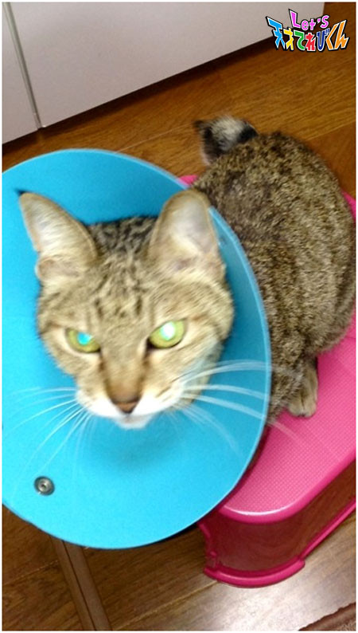
投稿者:飯島緋梨 | 投稿時間:18時45分 | カテゴリ：てれび戦士 | 固定リンク
未来の自分！［辻村晃佑］
今回のテーマは未来の自分か～
来年の事もわかんないのに10年後とか20年後とか、わかんね～～(;゜д゜)
でも夢はありますよ！
カフェ関係の仕事に就いてメニューをいろいろ考えて
お客さんに食べたり、飲んだりしてもらうことです(´∀｀)
なんでかというとカフェのメニューは全部おいしそうだから
自分もこういう物を作ってみたいなぁーと思ったからです。
この夢がかなったら、いそがしそうだけど楽しいと思いますね。
みなさんは未来の自分を想像できますか？
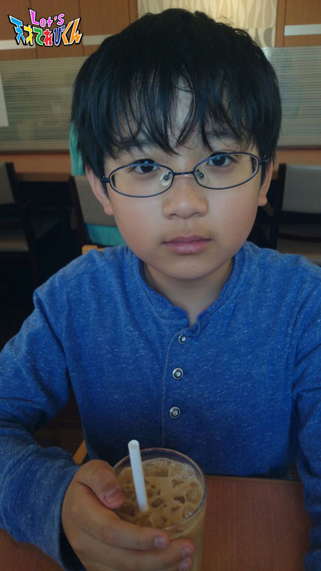
投稿者:辻村晃佑 | 投稿時間:18時45分 | カテゴリ：てれび戦士 | 固定リンク
ページの一番上へ▲